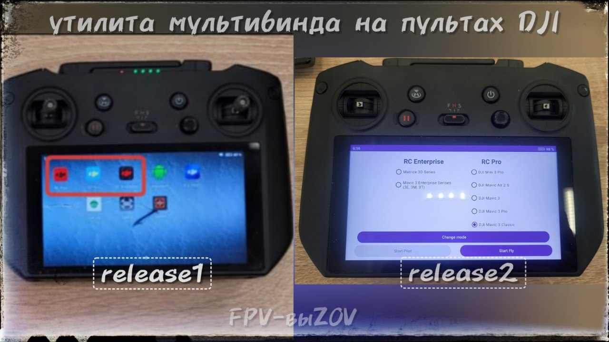
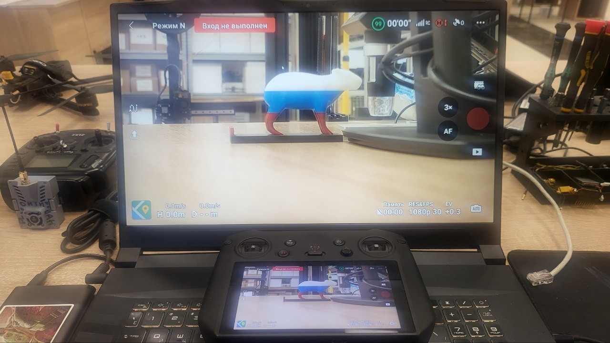

Утилита мультбинда для пультов
DJI RC Pro (rm510b) и DJI RC Plus (rm 700)
.
ℹ️ Возможность использовать один пульт с разными версиями дронов: Mavic 3E/3T/3M (Enterprise), Mavic 3/3 Classic/3 Cine/3 Pro, Mavic 3 Mini/3 Mini Pro, Mavic Air2S (Consumer). *
📝Шаг 1. Проверка совместимости пульта с утилитой
.
Для проверки необходимо:
📎
- распаковать архив на компьютер,
- включить и подключить пульт к компьютеру,
- запустить файл "
detect_revision.bat
" из папки
TOOLS
.
По результатам проверки:
- модель
rm510b/rm 700
;
- серийный номер
4QQZ…
или
5YSZ
.. (для rm510b) /
4LF…
(для rm 700),
- наличие установленной утилиты
cannot open
.
Если значения совпадают с
приведенными
, то утилиту можно устанавливать.
📝
Шаг 2. Установка утилиты мультибинда на пульт DJI.
Вам понадобится:
- компьютер с Windows,
- пульт DJI RC Pro (rm510b) или DJI RC Plus (rm 700),
- файлы установки утилиты,
- кабель USB (typeA/typeC).
* скачиваем утилиту на windows, далее следуем инструкции по установке.
⚠️ После распаковки не переименовывать и не переносить файлы из оригинальных папок. Установка привязана к оригинальному пути к файлам и названиям.
📝 Шаг 3. Работа.
Интерфейс "утилиты мультибинда" на пультах RC Pro версий "release 1" и "release 2" будет
, проверить
можно на первом Шаге данной инструкции.
На пультах PC Plus и PC Pro версии "release 1"
отображаются иконки с названиями типов пультов. (на фото слева) Чтобы выбрать нужную модель дрона - надо знать с каким пультом он совместим, и выбрать иконку соответствующего пульта.
RC Plus - работа с дроном Matrice 30T (Enterprise)*,
RC Enterprise - работа дронами Mavic 3E/3T/3M (Enterprise),
RC Pro - работа дронами Mavic 3/3 Classic/3 Cine/3 Pro, Mavic 3 Mini/3 Mini Pro, Mavic Air2S (Consumer).
Выбираете ярлык нужного приложения (под модель дрона), после чего пульт перезапускается уже с выбранным полетным приложением.
📎
На пультах RC Pro версии "release 2"
предлагается выбрать сразу нужную модель дрона (на фото справа), весь модельный ряд выведен на экран.
Выбираете нужную модель дрона, приступаете к работе.
📎
⚠️Чтобы не было ограничений на 5 полетов, при использовании неродного пульта, нужно:
- знать учетную запись, но которую активирован дрон, и запускать его с этой записи,
- или отвязать дрон от учетной записи (либо с оригинальной учетки, либо через программу UNBIND от РХ).
* Данная утилита не является аналогом "
COS",
в котором помимо мультибинда
#Оператору_квадрокоптеров_DJI_AUTEL_FIMI
#прошивка_пульта_dji
#на_пульт
Это вложение из поста t.me/platforma_fpv/637/972
Утилита мультбинда для пультов
DJI RC Pro (rm510b) и DJI RC Plus (rm 700)
.
ℹ️ Возможность использовать один пульт с разными версиями дронов: Mavic 3E/3T/3M (Enterprise), Mavic 3/3 Classic/3 Cine/3 Pro, Mavic 3 Mini/3 Mini Pro, Mavic Air2S (Consumer). *
📝Шаг 1. Проверка совместимости пульта с утилитой
.
Для проверки необходимо:
📎
- распаковать архив на компьютер,
- включить и подключить пульт к компьютеру,
- запустить файл "
detect_revision.bat
" из папки
TOOLS
.
По результатам проверки:
- модель
rm510b/rm 700
;
- серийный номер
4QQZ…
или
5YSZ
.. (для rm510b) /
4LF…
(для rm 700),
- наличие установленной утилиты
cannot open
.
Если значения совпадают с
приведенными
, то утилиту можно устанавливать.
📝
Шаг 2. Установка утилиты мультибинда на пульт DJI.
Вам понадобится:
- компьютер с Windows,
- пульт DJI RC Pro (rm510b) или DJI RC Plus (rm 700),
- файлы установки утилиты,
- кабель USB (typeA/typeC).
* скачиваем утилиту на windows, далее следуем инструкции по установке.
⚠️ После распаковки не переименовывать и не переносить файлы из оригинальных папок. Установка привязана к оригинальному пути к файлам и названиям.
📝 Шаг 3. Работа.
Интерфейс "утилиты мультибинда" на пультах RC Pro версий "release 1" и "release 2" будет
, проверить
можно на первом Шаге данной инструкции.
На пультах PC Plus и PC Pro версии "release 1"
отображаются иконки с названиями типов пультов. (на фото слева) Чтобы выбрать нужную модель дрона - надо знать с каким пультом он совместим, и выбрать иконку соответствующего пульта.
RC Plus - работа с дроном Matrice 30T (Enterprise)*,
RC Enterprise - работа дронами Mavic 3E/3T/3M (Enterprise),
RC Pro - работа дронами Mavic 3/3 Classic/3 Cine/3 Pro, Mavic 3 Mini/3 Mini Pro, Mavic Air2S (Consumer).
Выбираете ярлык нужного приложения (под модель дрона), после чего пульт перезапускается уже с выбранным полетным приложением.
📎
На пультах RC Pro версии "release 2"
предлагается выбрать сразу нужную модель дрона (на фото справа), весь модельный ряд выведен на экран.
Выбираете нужную модель дрона, приступаете к работе.
📎
⚠️Чтобы не было ограничений на 5 полетов, при использовании неродного пульта, нужно:
- знать учетную запись, но которую активирован дрон, и запускать его с этой записи,
- или отвязать дрон от учетной записи (либо с оригинальной учетки, либо через программу UNBIND от РХ).
* Данная утилита не является аналогом "
COS",
в котором помимо мультибинда
#Оператору_квадрокоптеров_DJI_AUTEL_FIMI
#прошивка_пульта_dji
#на_пульт
Это вложение из поста t.me/platforma_fpv/637/972
Трепет 2.5.050.
* июнь 2025
Устанавливается на
- пульт (режим "Оператор"), требуется активация;
- android (режим "Напарник").
📝
Это вложение из поста t.me/platforma_fpv/35/1097

Если Вам нужно транслировать экран пульта DJI или AUTEL на компьютер Windows или Android TV - используйте Miracast
(протокол трансляции экрана одного устройства на другое устройство).
📎 Скачать
на пульт
1. Установить на пульт studiosoolter.screenmirroring.miracast.apk
2. На компьютере запустить «Проецирование на компьютер» (на компьютере должен быть включен Wi-Fi).
На телевизоре с android запустить Miracast.
3. Запустить на пульте Screen Mirroring.
4. Закрыть экран с доступными для трансляции устройствами.
5. Нажать на Screen Mirror.
6. Нажать START.
7. Выбрать устройство для трансляции.
Готово – экран пульта транслируется.
#Оператору_квадрокоптеров_DJI_AUTEL_FIMI
#программное_обеспечение
#для_android
#на_пульт
Это вложение из поста t.me/platforma_fpv/16/1255
Трепет 2.5.040
для 32х-битных устройств
. Если стандартная 64х-битная версия (выше) у вас не устанавливается - попробуйте поставить эту 32+64 битную версию.
📝
Это вложение из поста t.me/platforma_fpv/35/1340
Трепет 2.5.045
ℹ️ Российское программное обеспечение для оператора DJI, устанавливается:
- на пульт
RC PRO и RC PLUS
(режим "Оператор");
- на android (режим "Напарник", может использоваться как карты).
✔️ Поддерживаются модели дронов
- DJI: М3*, М3T/М3Е, Matrice 30/300/350, Matrice 4Е/4E, Matrice 4D, Mini3/3Pro, Mini4PRO**;
- Autel 4Tmax (прошивка1.8+), Autel Alpha/Titan.
* Mavic 3 в Трепете работает только на Pro пультах. RM510, RM510b и RM700 с COS или
** Требуется прошивка 1001 и пульт RM510, 510b, 700 с COS или
Задачи, решаемые с помощью ПО "Трепет"
с дронов по Wi-Fi.
На карте
нужно нажать на свои летающие дроны. Возможен просмотр нескольких трансляций с нескольких дронов.
- Расчет зон Френеля (радиовидимости) при измерении расстояний.
- Точка дом (Даёт возможность по маркеру лететь если заблудишься).
- ... и много других возможностей,
ПО распространяется бесплатно, для режима "Оператор" (на пульте) требуется активация*
* в группе СВОи_FPV-выZOV , ветка "ПО".
⚠️ Будет полезно
-
(трансляция экрана пульта DJI на Windows или Android TV)
* если стандартная 64х-битная версия (выше) у вас не устанавливается - попробуйте поставить эту 32+64 битную версию.
#Оператору_квадрокоптеров_DJI_AUTEL_FIMI
#DJI
#для_android
#на_пульт
#трансляция_экрана
Веб-страница создана автоматически на основе поста пользователя ПЛАТФОРМА_FPV